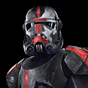

Hunter
Tactical leader of the Bad Batch who subtly destroys his enemies.
Tactical leader of the Bad Batch who subtly destroys his enemies.
Deal Physical damage to target enemy and inflict Expose for 2 turns. If target enemy was debuffed, attack again.
Clone Trooper allies gain Evasion Up and Stealth for 2 turns. Then, deal Physical damage to all enemies.
If Hunter was already Stealthed, all Bad Batch allies gain Critical Chance Up and Offense Up for 2 turns.
Inflict Expose on target enemy for 2 turns, which can't be evaded. Hunter swaps Turn Meter with target other Clone Trooper ally. If they were Bad Batch, they ignore Taunt effects and inflict Stun for 1 turn on their target enemy during that turn. This Stun can't be evaded.
Bad Batch allies have +35% Max Health, +35% Max Protection, and +50% Potency.
When Bad Batch allies use an ability while they have Defense Up, they deal true damage to all enemies.
While Bad Batch allies have Evasion Up, they have +50% Critical Avoidance. When using an ability against a Target Locked enemy, Bad Batch allies can't be countered.
When damaging an enemy with Expose, Bad Batch allies remove 50% Turn Meter from that enemy, doubled for Droid and Separatist enemies (excludes raid bosses and Galactic Legends), which can't be evaded or resisted.